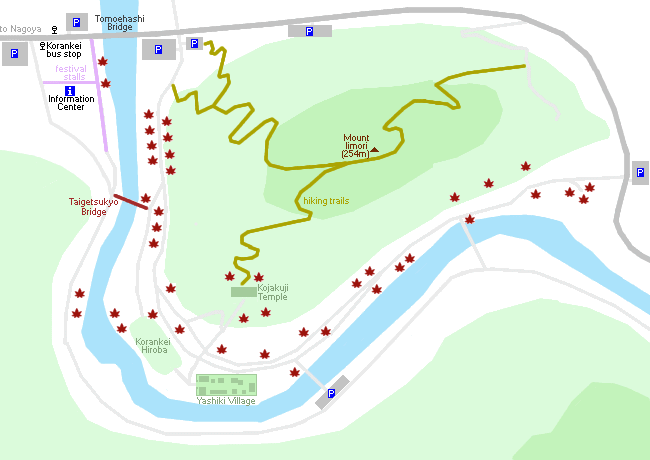
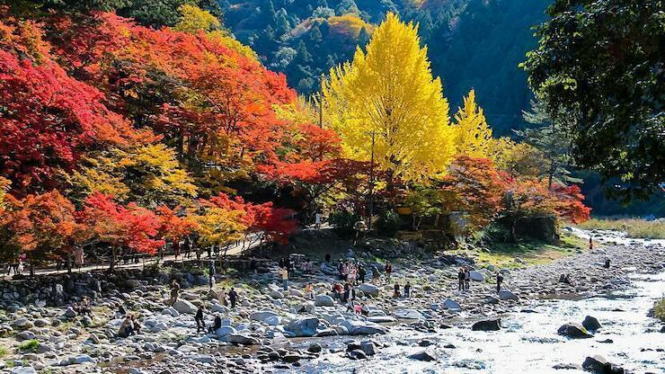
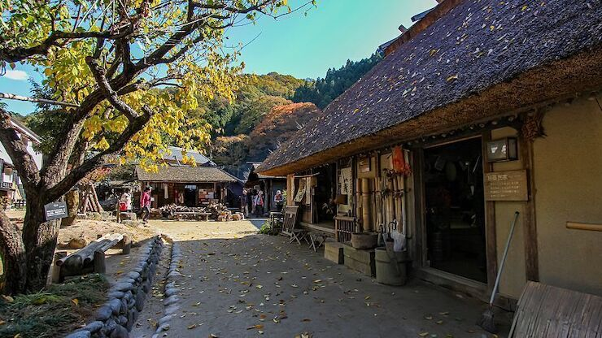

Korankei
香嵐渓
Korankei (香嵐渓, Kōrankei) is a valley near Nagoya reputed to be one of the best spots for autumn colors in the Chubu Region.
Shaping the valley is the 254 meter tall Mount Iimori, on which Kojakuji Temple stands. In the 17th century, the head priest of Kojakuji planted some maple trees along the temple approach, prompting many locals to do the same in the area. Today, visitors to Korankei can see the fruits of these past efforts, in the form of excellent autumn scenery that peak around mid to late November each year.
The best colors tend to appear around the paths along Tomoe River at the western and southern sides of Mount Iimori. Visitors can enjoy lovely sights of maple tree tunnels and autumn colors in combination with views of the river and the few bridges across it. The vermillion Taigetsukyo Bridge is the symbol of Korankei and a great picture-taking spot.
During each autumn leaf season, which typically lasts through November, festival stalls are set up close to Tomoehashi Bridge, where nightly illuminations are held from sunset till 21:00. Events such as musical performances are held at the Korankei Hiroba open space.
One attraction at Korankei that is independent of the autumn colors is the Sanshu Asuke Yashiki Village, which preserves many old houses in a village-like atmosphere. Visitors can participate in one of the many workshops held in the various houses, and try to make some handicrafts such as straw sandals and indigo dyed handkerchiefs.
